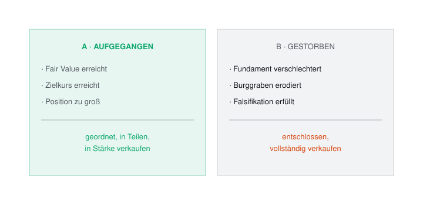
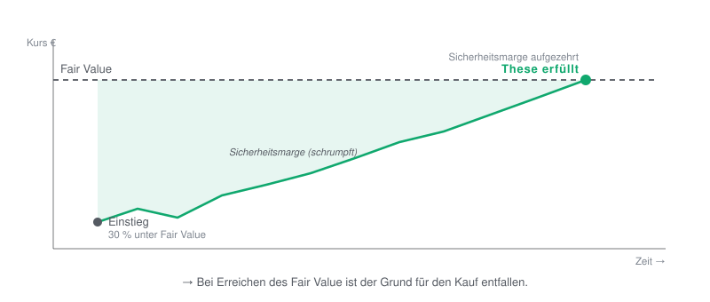
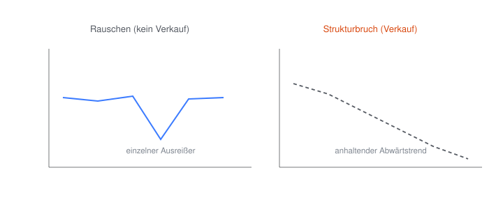
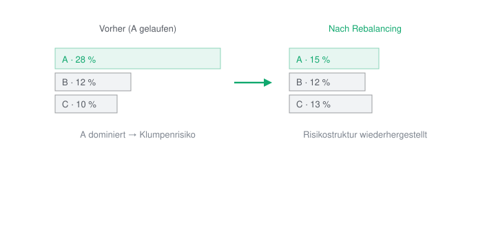

Warum Verkaufen schwerer ist als Kaufen
Beim Kauf hast du unendlich viele Alternativen und keine emotionale Vorgeschichte. Beim Verkauf hast du eine Position, einen Einstandskurs, der dich anstarrt, und zwei Jahre gedankliche Bindung an eine These. Der Verkauf ist der Ort, an dem die Psychologie aus Modul 7 am stärksten zuschlägt — lange bevor du Modul 7 gelesen hast.
Erinnere dich an zwei Befunde aus Modul 1:
Dispositionseffekt: Anleger verkaufen Gewinner zu früh
und halten Verlierer zu lange.
→ Exakt die Umkehrung des Richtigen.
Fehlende Ausstiegsregel: Die meisten haben eine Kaufthese,
aber keine Verkaufsthese.
→ Jede Position wird unfalsifizierbar.
Dieses Modul liefert die Verkaufsthese, die dir beim Kauf gefehlt hat. Es macht den Ausstieg zu einer Regel, nicht zu einer Stimmung.
Lernziele
Nach diesem Modul kannst du:
- die drei legitimen Verkaufsgründe benennen und jeden von einem Scheingrund unterscheiden;
- zwischen Fair-Value-Verkauf und Thesenbruch-Verkauf unterscheiden und wissen, welcher welche Handlung auslöst;
- eine Fundamentalverschlechterung früh erkennen und von normalem Rauschen trennen;
- einen Trendbruch als Verkaufsauslöser einordnen — und seine Grenzen kennen;
- Gewinne laufen lassen, ohne in Gier zu kippen — eine der schwierigsten Balancen des Investierens;
- Teilverkäufe als Werkzeug einsetzen, das die emotionale Entscheidung entschärft;
- Rebalancing regelbasiert durchführen und seinen Effekt auf Risiko und Rendite verstehen;
- die Nicht-Verkaufsgründe erkennen, die die meisten Anleger ruinieren.
6.0Die zwei Kategorien des Verkaufs
Jeder legitime Verkauf fällt in genau eine von zwei Kategorien. Sie lösen unterschiedliche Handlungen aus, und ihre Verwechslung ist die Wurzel der meisten Verkaufsfehler.

Die entscheidende Unterscheidung: Ein sinkender Kurs allein gehört in keine der beiden Kategorien. Er ist weder „These aufgegangen" noch „These gestorben" — er ist nur ein Preis. Ob er ein Verkaufsgrund ist, hängt ausschließlich davon ab, ob sich die Fundamentaldaten geändert haben (Kategorie B) oder nicht (dann: kein Verkauf, evtl. Nachkauf).
Merksatz 1Du verkaufst, weil deine These beendet ist — aufgegangen oder gestorben. Du verkaufst nicht, weil der Kurs sich bewegt hat. Der Kurs ist ein Symptom, die These ist die Diagnose.
6.1Verkaufsgrund 1 — Fairer Wert / Zielkurs erreicht
Das Grundprinzip
Du bist eingestiegen, weil der Kurs deutlich unter dem fairen Wert lag (Sicherheitsmarge, Modul 2). Der logische Endpunkt dieser These ist erreicht, wenn der Kurs den fairen Wert erreicht — oder übersteigt.

Die Nuance: Fairer Wert ist beweglich
Der faire Wert ist keine feste Zahl. Ein exzellentes Unternehmen steigert seinen inneren Wert über die Zeit (Modul 1: der Wert steigt langsam, der Kurs schwankt darum). Wenn du bei einem fairen Wert von 166 € gekauft hast und der Kurs zwei Jahre später bei 166 € steht, der faire Wert aber inzwischen auf 210 € gewachsen ist, ist die Sicherheitsmarge nicht aufgezehrt.
Deshalb: Vor jedem Fair-Value-Verkauf den fairen Wert neu berechnen. Nicht der Einstands-Fair-Value zählt, sondern der aktuelle.
Die Handlung
Kategorie A (These aufgegangen): geordneter, oft gestaffelter Verkauf in Stärke. Kein Zwang, alles auf einmal zu verkaufen — Teilverkäufe (6.5) sind hier das passende Werkzeug, besonders wenn der Kurs den Fairen Wert mit Momentum überschießt.
Merksatz 2Bevor du verkaufst, weil der faire Wert erreicht ist, frage: Ist es derselbe faire Wert wie beim Kauf? Gute Unternehmen wachsen aus ihrem alten fairen Wert heraus.
Mit Fair Value Pro neu berechnen →
6.2Verkaufsgrund 2 — Fundamentaldaten verschlechtern sich
Dies ist der Verkaufsgrund, den die meisten Anleger zu spät erkennen — weil sie auf den Kurs statt auf das Geschäft schauen.
Die Frühwarnsignale (aus Modul 2)
Die Verschlechterung zeigt sich in den Zahlen, oft Quartale bevor der Kurs reagiert:
| Signal | Was es bedeutet | Modul |
|---|---|---|
| Bruttomarge fällt | Preissetzungsmacht schwindet — das Fieberthermometer des Burggrabens | 2.7 |
| ROIC fällt unter WACC | Das Unternehmen vernichtet jetzt Wert statt ihn zu schaffen | 2.9 |
| Operativer Cashflow löst sich vom Gewinn | Gewinnqualität sinkt, evtl. Bilanzprobleme | 2.5 |
| Burggraben erodiert | Wettbewerber holen auf, Preissetzung geht verloren | 2.2 |
| Kapitalallokation zerstört Wert | Teure Übernahme, Rückkäufe auf Hoch, Schulden für Dividende | 2.3 |
| Umsatzwachstum bricht strukturell | unter die DCF-Annahme, mehrere Quartale in Folge | 2.4 |
Verschlechterung von Rauschen trennen
Nicht jedes schwache Quartal ist ein Thesenbruch. Die Kunst ist, strukturelle Verschlechterung von temporären Schwankungen zu unterscheiden:
| ❌ Rauschen (kein Verkauf) | ✅ Strukturbruch (Verkauf) |
|---|---|
| ein schwaches Quartal | drei schwache Quartale in Folge |
| Währungseffekt | Bruttomarge fällt anhaltend |
| einmaliger Sondereffekt | derselbe „Sondereffekt" jedes Jahr |
| branchenweiter Gegenwind, der vorübergeht | unternehmensspezifischer Verlust von Marktanteilen |
| Management erklärt es glaubhaft | Management wird vage / wechselt CFO |

Der Bezug zum Falsifikationskriterium (Modul 1)
Genau hier zahlt sich das Falsifikationskriterium aus, das du beim Kauf notiert hast. Wenn du geschrieben hast „Ich verkaufe, wenn die Bruttomarge zwei Quartale in Folge unter 40 % fällt" — dann ist die Entscheidung bereits getroffen. Du musst im Moment der Verschlechterung nicht neu abwägen (und der Abwägung nachgeben, sie „diesmal" zu ignorieren). Du führst nur die Regel aus.
Die Handlung
Kategorie B (These gestorben): entschlossener, vollständiger Verkauf. Kein Zögern, kein „ich warte noch ein Quartal", kein Teilverkauf zur Beruhigung. Wenn die These gebrochen ist, ist der Grund, das Kapital zu binden, entfallen — unabhängig davon, ob du im Gewinn oder Verlust bist.
Praxisbeispiel — das Muster (Intel): Der Verlust der Fertigungsführerschaft und die fallende Bruttomarge waren in den Zahlen jahrelang sichtbar, bevor der Kurs die volle Konsequenz zog. Wer auf die Bruttomarge geachtet hätte, hätte einen klaren, frühen Thesenbruch-Verkauf gehabt. Wer auf den Kurs wartete, verkaufte spät oder gar nicht.
Merksatz 3Verkaufe eine gebrochene These sofort und vollständig — egal, ob im Plus oder Minus. Der Einstandskurs ist der Vergangenheit egal, und er sollte es dir auch sein.
6.3Verkaufsgrund 3 — Trendbruch
Die vorsichtige Einordnung
Ein Trendbruch (Modul 3: tieferes Tief, Fall unter die 200-Tage-Linie, Bruch einer wichtigen Unterstützung mit Volumen) ist ein nachrangiges, warnendes Signal — kein primärer Verkaufsgrund für den Fundamentalanleger.
Der Grund: Der Chart hat kein Vetorecht (Modul 4). Ein fundamental intaktes Unternehmen, dessen Kurs fällt, wird dadurch attraktiver, nicht unattraktiver. Wer allein auf einen Trendbruch hin verkauft, verkauft möglicherweise genau die Sicherheitsmarge, für die er gekauft hat.
Wann ein Trendbruch trotzdem zählt
Ein Trendbruch verdient Aufmerksamkeit als Anlass zur Überprüfung, nicht als automatischer Verkaufsauslöser:
Trendbruch tritt ein
│
▼
→ Nicht automatisch verkaufen. Stattdessen: THESE PRÜFEN.
│
├─ These intakt? → Halten (evtl. Kaufgelegenheit, Modul 4)
│ Der Markt weiß oft nichts, was du nicht weißt.
│
└─ Bei Prüfung Verschlechterung gefunden? → Verkaufen (Grund 2)
Der Trendbruch war dann der Frühindikator, nicht der Grund.
Manchmal „weiß" der Markt tatsächlich etwas zuerst — der Kurs fällt, bevor die schlechten Zahlen offiziell sind. Deshalb ist ein Trendbruch ein Auslöser für erneute Sorgfalt. Aber die Entscheidung trifft die Fundamentalanalyse, nicht die Trendlinie.
Die Ausnahme: der Kurs-Stop als Notausgang
Für den Fall, dass du einen Kurs-Stop gesetzt hast (Modul 5), ist der Trendbruch die technische Umsetzung. Aber auch dort galt: Der Thesen-Stop ist primär, der Kurs-Stop nur ein grober Notausgang gegen die Situation, dass sich deine These als katastrophal falsch erweist und du es zu spät bemerkst.
Merksatz 4Ein Trendbruch ist eine Frage, keine Antwort. Er fragt: „Weißt du etwas, das der fallende Kurs noch nicht weiß?" Prüfe deine These — und lass sie, nicht den Chart, entscheiden.
6.4Gewinne laufen lassen — die schwierigste Balance
Das Spannungsfeld
Zwei Wahrheiten stehen sich gegenüber:
„Realisiere Gewinne, bevor sie verschwinden" vs. „Lass deine Gewinner laufen"
(Dispositionseffekt-Falle) (die großen Gewinne kommen
von wenigen Positionen)
Beide sind richtig — in unterschiedlichen Situationen. Die Auflösung liegt nicht in einer Regel, sondern in der Unterscheidung, warum die Position gestiegen ist.
Die Auflösung: Wächst der Wert mit?
| Situation | Handlung |
|---|---|
| Kurs steigt, innerer Wert wächst mit (Unternehmen liefert) | Laufen lassen. Die Sicherheitsmarge bleibt bestehen. |
| Kurs steigt, innerer Wert stagniert (nur die Bewertung dehnt sich) | Verkaufen / Teilverkauf. Die Marge ist aufgezehrt. |
Ein steigender Kurs ist kein Verkaufsgrund. Ein steigender Kurs ohne mitwachsenden Wert schon.
Warum „Gewinner laufen lassen" mathematisch zwingend ist
Erinnere dich an den Erwartungswert und die asymmetrische Verlustmathematik (Modul 1):
Ein Verlust ist auf −100 % begrenzt.
Ein Gewinn ist nach oben offen (+200 %, +500 %, +1000 %).
→ Wenige große Gewinner müssen viele kleine Verlierer überkompensieren.
→ Wer die großen Gewinner früh abschneidet, kappt genau die Positionen,
die das ganze System tragen sollen.
Der Dispositionseffekt — Gewinner zu früh verkaufen — ist deshalb nicht nur ein psychologischer Fehler, sondern ein mathematischer: Er zerstört die Asymmetrie, von der das positive Erwartungswert-System lebt.
Die praktische Balance: Trailing Stop auf den Wert, nicht auf den Kurs
Statt einen Gewinn bei einer willkürlichen Zahl mitzunehmen, ziehst du die Falsifikations- und Fair-Value-Linie mit: Solange das Unternehmen liefert und der Kurs unter dem (wachsenden) fairen Wert bleibt, hältst du. Der Verkauf wird durch Wert-Erreichen (6.1) oder Thesenbruch (6.2) ausgelöst — nicht durch eine Gewinnschwelle.
Merksatz 5Schneide Verluste, wenn die These stirbt. Lass Gewinne laufen, solange der Wert mitwächst. Der Fehler ist nicht, zu verlieren — der Fehler ist, die Gewinner zu köpfen, die alles bezahlen sollen.
6.5Teilverkäufe — das Werkzeug gegen die Emotion
Warum Teilverkäufe so nützlich sind
Der vollständige Verkauf ist eine binäre, emotional aufgeladene Entscheidung: „alles oder nichts". Der Teilverkauf entschärft sie, indem er sie teilbar macht. Er ist selten die optimale Entscheidung — aber oft die robusteste, weil er beide Reue-Richtungen begrenzt:
Vollverkauf → Kurs steigt weiter → „Hätte ich nur gehalten!" Halten → Kurs fällt → „Hätte ich nur verkauft!" Teilverkauf → egal was passiert → „Ich habe an beidem teilgehabt."
Die drei sinnvollen Einsätze
1. Bei Annäherung an den Fairen Wert (Grund 1). Der Kurs überschießt den fairen Wert mit Momentum. Du verkaufst z. B. die Hälfte am fairen Wert und lässt die andere Hälfte mit einem nachgezogenen Kriterium laufen. So realisierst du den Gewinn der These und partizipierst an einem möglichen Überschießen.
2. Bei einer zu groß gewordenen Position (Rebalancing). Ein großer Gewinner ist auf 20 % des Depots gewachsen und verletzt deine Positionsobergrenze (Modul 5). Du verkaufst so viel, dass die Positionsgröße wieder ins Risiko-Regelwerk passt — ohne die ganze Position aufzugeben.
3. Bei Unsicherheit über die These. Die Fundamentaldaten trüben sich ein, aber es ist noch kein klarer Bruch. Ein Teilverkauf reduziert das Risiko, während du weiter beobachtest. Achtung: Das ist ein legitimer Kompromiss, darf aber nicht zur Ausrede werden, einen klaren Thesenbruch (Grund 2) nur „halb" zu verkaufen. Bei echtem Bruch gilt: vollständig raus.
Merksatz 6Der Teilverkauf ist selten die beste Entscheidung, aber oft die klügste — weil er die Entscheidung überhaupt erst möglich macht, wenn Angst und Gier dich sonst lähmen würden.
6.6Rebalancing
Was Rebalancing ist
Rebalancing ist das regelbasierte Zurückführen der Positionsgewichte auf ihre Zielgewichte. Gewinner werden getrimmt, Verlierer (mit intakter These) aufgestockt — sodass das Depot seine geplante Risikostruktur (Modul 5) behält.

Der Doppeleffekt
Rebalancing wirkt auf zwei Ebenen:
- Risiko: Es verhindert, dass ein einzelner Gewinner das Depot dominiert und ein Klumpenrisiko aufbaut (Modul 5). Das ist der primäre Zweck.
- Rendite (antizyklisch): Es zwingt dazu, hoch bewertete Positionen zu trimmen und günstigere aufzustocken — also systematisch „hoch verkaufen, tief kaufen", ohne dass eine Prognose nötig wäre.
Die Spannung mit „Gewinner laufen lassen"
Rebalancing und „Gewinner laufen lassen" (6.4) scheinen sich zu widersprechen. Die Auflösung liegt wieder im Wert:
Position A ist auf 28 % gewachsen.
│
├─ Wert wächst mit, Sicherheitsmarge intakt?
│ → nur so weit trimmen, dass das Klumpenrisiko beherrschbar bleibt
│ (Risiko-Obergrenze aus Modul 5), Rest laufen lassen
│
└─ Wert stagniert, Kurs über Fairem Wert?
→ deutlicher zurückführen (Grund 1 greift ohnehin)
Rebalancing ist also kein blindes Zurückschneiden auf ein starres Zielgewicht, sondern die Anwendung der Risiko-Obergrenzen unter Berücksichtigung der Bewertung. Ein herausragender Gewinner mit intakter, wachsender These darf ein Übergewicht behalten — nur eben ein kontrolliertes.
Rebalancing-Auslöser
| Methode | Auslöser | Vorteil |
|---|---|---|
| Schwellenbasiert | Position über-/unterschreitet ihr Zielgewicht um X Prozentpunkte | reagiert auf tatsächliche Verschiebung |
| Kalenderbasiert | fester Termin (z. B. jährlich) | einfach, diszipliniert, wenige Transaktionen |
| Regel-Obergrenze | Einzelposition über Max (Modul 5) | direkter Risikobezug |
Steuerlicher Hinweis (Modul 1): Rebalancing erzeugt realisierte Gewinne und damit Steuerlast (Abgeltungsteuer). Zu häufiges Rebalancing kostet über den Zinseszins-Effekt Rendite. Deshalb: eher grobe Schwellen und lange Intervalle als feinjustiertes, häufiges Umschichten.
Merksatz 7Rebalancing ist Risikomanagement, das sich als Renditestrategie tarnt. Sein Zweck ist nicht, mehr zu verdienen — sondern zu verhindern, dass ein einziger Gewinner dein ganzes Risiko wird.
Im Investment Planner planen →
6.7Die Nicht-Verkaufsgründe
Ebenso wichtig wie die legitimen Gründe sind die Scheingründe, die die meisten Anleger zum Verkauf verleiten — und die systematisch Geld kosten.
| Scheingrund | Warum er falsch ist | Was stattdessen gilt |
|---|---|---|
| „Der Kurs ist gefallen" | Bei intakter These wird die Aktie attraktiver | Nur verkaufen bei Thesenbruch (Grund 2) |
| „Ich bin jetzt im Plus" | Der Einstandskurs ist irrelevant für den Wert | Am Fairen Wert orientieren, nicht am Einstand |
| „Ich will den Gewinn sichern" | Dispositionseffekt — köpft die Gewinner | Wert-basiert laufen lassen (6.4) |
| „Die Aktie steht seit Monaten still" | Langeweile ist kein Verkaufsgrund | Geduld ist dein Vorteil (Modul 1) |
| „Ein Experte im TV rät zum Verkauf" | Fremde These ohne deine Analyse | Deine eigene These entscheidet |
| „Ich brauche das Geld für die nächste Idee" | Kann sinnvoll sein — aber prüfe das CRV beider | Nur wenn die neue Idee klar besser ist |
| „Alle verkaufen gerade" | Herdentrieb, oft am Tiefpunkt | Marktpanik ist oft Kaufgelegenheit |
| „Es hat sich rund verdoppelt, das reicht" | Willkürliche Zahl ohne Wertbezug | Fairen Wert prüfen, nicht den Vervielfacher |
Der teuerste Nicht-Verkaufsgrund: der Einstandskurs
Der Einstandskurs ist die gefährlichste Zahl in deinem Depot. Er ist für den zukünftigen Wert einer Aktie vollkommen irrelevant — die Aktie „weiß" nicht, zu welchem Preis du sie gekauft hast. Aber er verankert dein Denken (Anchoring, Modul 7):
- „Ich verkaufe, sobald ich wieder bei Plus-Minus-Null bin" → man hält eine gebrochene These, um einen Verlust nicht zu realisieren.
- „Ich habe zu 50 gekauft, bei 100 verkaufe ich" → man köpft einen Gewinner bei einer willkürlichen Verdopplung, obwohl der faire Wert bei 180 liegt.
Die Übung, die hilft: Frage dich bei jeder Halte-Entscheidung: „Würde ich diese Aktie heute, zum heutigen Kurs, neu kaufen?" Wenn ja → halten (oder aufstocken). Wenn nein → warum besitzt du sie dann? Diese Frage macht den Einstandskurs irrelevant, weil sie ihn gar nicht erst enthält.
Merksatz 8Die Aktie kennt deinen Einstandskurs nicht. Behandle sie jeden Tag so, als hättest du sie noch nicht — und entscheide neu, ob du sie zum heutigen Preis kaufen würdest.
Typische Anfängerfehler in Modul 6
| Fehler | Warum er teuer ist | Gegenmittel |
|---|---|---|
| Verkaufen, weil der Kurs fiel (These intakt) | Verkauft die eigene Sicherheitsmarge | Nur bei Thesenbruch verkaufen (6.0, 6.2) |
| Gewinner zu früh realisieren | Dispositionseffekt, zerstört die Asymmetrie | Wert-basiert laufen lassen (6.4) |
| Verlierer mit gebrochener These halten | „Bei Null verkaufe ich" — Anchoring | Einstandskurs ignorieren, heute-neu-kaufen-Test |
| Verkauf am Fairen Wert mit altem Fairen Wert | Verkauft gute Unternehmen zu früh | Fairen Wert vor Verkauf neu berechnen (6.1) |
| Trendbruch als automatischen Verkauf | Verkauft evtl. am Tief | Trendbruch → Thesenprüfung, nicht Verkauf (6.3) |
| Thesenbruch nur „halb" verkaufen | Bindet Kapital an ein totes Investment | Bei echtem Bruch vollständig raus (6.2, 6.5) |
| Zu häufig rebalancen | Steuerlast, Zinseszins-Verlust | Grobe Schwellen, lange Intervalle (6.6) |
| Auf willkürliche Vervielfacher verkaufen | „Verdopplung reicht" ohne Wertbezug | Fairer Wert, nicht Multiplikator (6.7) |
| Wegen Langeweile verkaufen | Geduld ist der eigene Vorteil | Stillstand ist kein Verkaufsgrund (6.7) |
Checkliste — vor jedem Verkauf
Erst die Kategorie bestimmen:
- Ist die These aufgegangen (Kategorie A) oder gestorben (Kategorie B)? Oder keins von beiden (dann: nicht verkaufen)?
Bei Kategorie A (aufgegangen):
- Fairer Wert neu berechnet — ist die Sicherheitsmarge wirklich aufgezehrt?
- Wächst der innere Wert noch mit? Falls ja: Teilverkauf statt Vollverkauf erwägen.
- Verkauf geordnet, in Stärke, ggf. gestaffelt.
Bei Kategorie B (gestorben):
- Konkretes Falsifikationskriterium (aus dem Einstiegsplan) erfüllt?
- Struktureller Bruch oder nur Rauschen? (drei Quartale, Bruttomarge, ROIC vs. WACC)
- Falls echter Bruch: vollständig verkaufen, ohne Rücksicht auf den Einstandskurs.
Gegen die Scheingründe:
- Ich verkaufe nicht nur, weil der Kurs gefallen ist.
- Ich verkaufe nicht nur, weil ich im Plus bin oder mich ein Vervielfacher juckt.
- „Würde ich diese Aktie heute, zum heutigen Kurs, neu kaufen?" — Antwort ehrlich beantwortet.
- Steuerlast des Verkaufs bedacht.
Zusammenfassung
- Verkaufen ist schwerer als Kaufen, weil es die volle emotionale Ladung trägt. Die Lösung ist eine Verkaufsregel, keine Stimmung.
- Jeder legitime Verkauf ist entweder „These aufgegangen" (Erfolg, geordnet verkaufen) oder „These gestorben" (Fehler, entschlossen verkaufen). Ein fallender Kurs allein ist keins von beidem.
- Fair-Value-Verkauf: Vorher den aktuellen fairen Wert neu berechnen — gute Unternehmen wachsen aus ihrem alten Wert heraus.
- Fundamentalverschlechterung zeigt sich in den Zahlen vor dem Kurs — der Verkaufsgrund, den die meisten zu spät erkennen. Struktur von Rauschen trennen; bei echtem Bruch vollständig raus.
- Trendbruch ist eine Frage, keine Antwort: Er löst eine Thesenprüfung aus, keinen automatischen Verkauf.
- Gewinne laufen lassen, solange der Wert mitwächst — das ist mathematisch zwingend, weil wenige große Gewinner das ganze System tragen.
- Teilverkäufe entschärfen die binäre, emotionale Entscheidung und begrenzen die Reue in beide Richtungen.
- Rebalancing ist primär Risikomanagement (Klumpen verhindern), sekundär antizyklische Rendite. Nicht zu häufig (Steuer).
- Die Nicht-Verkaufsgründe — allen voran der Einstandskurs — ruinieren die meisten Anleger. Der Test: „Würde ich heute neu kaufen?"
Quiz
- Nenne die zwei übergeordneten Kategorien, in die jeder legitime Verkauf fällt, und die jeweils passende Handlung.
- Du hast eine Aktie mit einem fairen Wert von 150 € gekauft. Heute steht sie bei 150 €, aber der faire Wert ist inzwischen auf 195 € gewachsen. Verkaufst du? Begründe.
- Warum ist ein fallender Kurs bei intakter Fundamentalthese kein Verkaufsgrund?
- Wie unterscheidest du eine strukturelle Fundamentalverschlechterung von bloßem Rauschen? Nenne drei Kriterien.
- Ein Trendbruch tritt ein (Kurs fällt unter die 200-Tage-Linie mit Volumen). Was ist die richtige erste Reaktion des Fundamentalanlegers — und was gerade nicht?
- Warum ist es mathematisch zwingend, große Gewinner laufen zu lassen, statt sie früh zu realisieren? (Bezug auf Modul 1.)
- In welchen drei Situationen ist ein Teilverkauf ein sinnvolles Werkzeug?
- Was sind die zwei Effekte des Rebalancing, und welcher ist der primäre?
- Ein Bekannter sagt: „Meine Aktie hat sich verdoppelt, ich verkaufe jetzt — Gewinn ist Gewinn." Welchen Denkfehler begeht er?
- Formuliere die eine Frage, die den Einstandskurs bei jeder Halte-Entscheidung irrelevant macht.
Lösungen anzeigen
- (A) These aufgegangen (Erfolgs-Verkauf: Fairer Wert/Zielkurs erreicht, Position zu groß) → geordneter, oft gestaffelter Verkauf in Stärke. (B) These gestorben (Fehler-Verkauf: Fundamentaldaten verschlechtert, Falsifikationskriterium erfüllt) → entschlossener, vollständiger Verkauf. Ein reiner Kursrückgang gehört in keine der beiden Kategorien.
- Nein. Die Sicherheitsmarge ist nicht aufgezehrt — der Kurs (150 €) liegt weiterhin deutlich unter dem aktuellen fairen Wert (195 €). Der Fehler wäre, den alten Einstands-Fair-Value (150 €) zu verwenden. Gute Unternehmen steigern ihren inneren Wert; vor jedem Fair-Value-Verkauf muss der faire Wert neu berechnet werden.
- Weil die Kaufbegründung die Unterbewertung war (Sicherheitsmarge). Fällt der Kurs bei intakter These, vergrößert sich die Sicherheitsmarge — die Aktie wird attraktiver, nicht unattraktiver. Ein Verkauf würde genau die Marge realisieren, für die man gekauft hat, möglicherweise am Tiefpunkt. Verkauft wird nur bei Änderung der Fundamentaldaten, nicht des Kurses.
- Drei Kriterien (Beispiele): (a) Dauer — ein schwaches Quartal ist Rauschen, drei in Folge sind Struktur. (b) Bruttomarge — ein einmaliger Dip mit Rückkehr ist Rauschen, ein anhaltender Fall ist Strukturbruch (Verlust der Preissetzungsmacht). (c) Ursache — vorübergehender branchenweiter Gegenwind oder echter Währungseffekt ist Rauschen; unternehmensspezifischer Verlust von Marktanteilen oder ein jedes Jahr wiederkehrender „Sondereffekt" ist Struktur. (Auch: ROIC fällt dauerhaft unter WACC; Management wird vage/CFO wechselt.)
- Richtig: die These prüfen — der Trendbruch ist ein Anlass zu erneuter Sorgfalt, weil der Markt manchmal etwas zuerst „weiß". Ist die These intakt, wird gehalten (evtl. Kaufgelegenheit). Findet die Prüfung eine Verschlechterung, wird verkauft — dann aber wegen Grund 2, nicht wegen des Charts. Falsch: automatisch verkaufen, nur weil eine Trendlinie gebrochen ist. Der Chart hat kein Vetorecht.
- Weil Verluste auf −100 % begrenzt, Gewinne aber nach oben offen sind (asymmetrische Verlustmathematik, Modul 1). In einem positiven Erwartungswert-System tragen wenige große Gewinner die vielen kleinen Verlierer. Wer die Gewinner früh abschneidet (Dispositionseffekt), kappt genau die Positionen, die das System profitabel machen — und zerstört die Asymmetrie, von der der Erwartungswert lebt.
- (1) Bei Annäherung an den Fairen Wert, wenn der Kurs mit Momentum überschießt — Hälfte realisieren, Rest laufen lassen. (2) Bei einer zu groß gewordenen Position, die die Risiko-Obergrenze verletzt — so viel verkaufen, dass sie wieder ins Regelwerk passt. (3) Bei Unsicherheit über die These (Eintrübung, aber kein klarer Bruch) — Risiko reduzieren und weiter beobachten. (Nicht als Ausrede, einen klaren Bruch nur halb zu verkaufen.)
- (1) Risiko: Es verhindert, dass ein einzelner Gewinner das Depot dominiert (Klumpenrisiko). (2) Rendite: antizyklisches „hoch verkaufen, tief kaufen" ohne Prognose. Der primäre Zweck ist das Risikomanagement — Rebalancing ist Risikosteuerung, die sich als Renditestrategie tarnt.
- Er verkauft auf einen willkürlichen Vervielfacher (Verdopplung) ohne Bezug zum fairen Wert — eine Mischung aus Dispositionseffekt (Gewinner zu früh realisieren) und Anchoring am Einstandskurs. Liegt der faire Wert deutlich über dem aktuellen Kurs und wächst der innere Wert mit, köpft er einen Gewinner, der noch Sicherheitsmarge hat. Die Frage ist nicht „wie viel habe ich gemacht?", sondern „steht der Kurs über oder unter dem aktuellen fairen Wert?".
- „Würde ich diese Aktie heute, zum heutigen Kurs, neu kaufen?" — Ja → halten oder aufstocken. Nein → verkaufen. Die Frage enthält den Einstandskurs gar nicht und macht ihn damit irrelevant.
Praktische Übungen
Übung 1 — Deine Verkaufsregeln schreiben (45 Min.)
Formuliere für dich schriftlich deine drei Verkaufsgründe, jeweils mit einem konkreten, messbaren Auslöser (kein „wenn es schlechter wird", sondern „wenn X unter Y für Z Quartale"). Das ist dein persönliches Verkaufs-Regelwerk für Modul 8.
Übung 2 — Der Kategorie-Test (30 Min.)
Nimm drei Positionen aus deinem Depot (oder drei hypothetische). Ordne jede der aktuellen Kategorie zu: These aufgegangen, gestorben oder keins von beiden. Begründe. Für wie viele hättest du auf Anhieb eine klare Antwort gehabt?
Übung 3 — Fairen Wert neu berechnen (60 Min.)
Wähle eine Position, die seit dem Kauf deutlich gestiegen ist. Berechne den fairen Wert heute neu (Modul 2). Vergleiche mit dem Einstands-Fair-Value. Ist die Sicherheitsmarge aufgezehrt — oder ist das Unternehmen aus seinem alten Wert herausgewachsen?
Übung 4 — Rauschen oder Strukturbruch? (45 Min.)
Suche ein Unternehmen, dessen Kurs zuletzt deutlich gefallen ist. Prüfe anhand der Fundamentalsignale (Bruttomarge, ROIC, Cashflow-Gewinn-Lücke, Umsatzwachstum): War es Rauschen oder ein Strukturbruch? Woran machst du es fest?
Übung 5 — Der Einstandskurs-Test (30 Min.)
Gehe dein gesamtes Depot durch. Frage bei jeder Position: „Würde ich sie heute, zum heutigen Kurs, neu kaufen?" Markiere alle Positionen mit „Nein". Das ist deine Verkaufs-Prüfliste — arbeite sie durch und begründe jede Halte- oder Verkaufsentscheidung ohne Bezug auf deinen Einstandskurs.
Übung 6 — Teilverkauf durchspielen (30 Min.)
Für eine Position nahe deinem fairen Wert: Entwirf einen konkreten Teilverkaufsplan (welcher Anteil bei welchem Kurs/Signal, was passiert mit dem Rest). Definiere ausdrücklich, was den Verkauf des Rests auslöst.